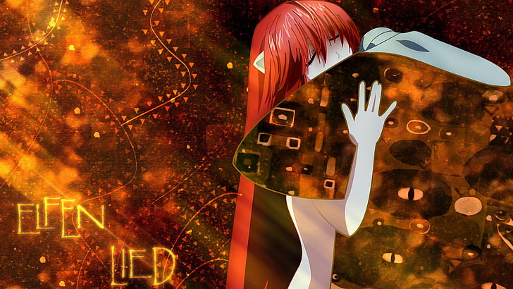

Elfen Lied
Musa AktaşJaponya’nın Kamakura şehrinde laboratuardan kaçan Lucy adlı kızı, Kuota ve onun kuzeni Yuka adında iki yerli gencin bulması ile başlıyor. Görünüşü her ne kadar insana benzese de Lucy bir insan deÄŸil. İnsanlardan görünüşte ayırt edilebilecek tek özelliÄŸi kafasından kulak benzeri bir çıkıntının çıkıyor olması. Bana elften çok yarı-elfleri anımsatıyor bu uzuvlar, ancak Lucy’nin insanlardan tek farkı bu deÄŸil. Lucy bir “Dicloniusâ€. Evrim sürecinde yeni bir tür; insanlar gibi ancak üç farklı özellikleri var. Bunlardan birincisi yukarıda bahsetmiş olduÄŸum kulak benzeri çıkıntılar. İkinci ve Diclonius’ları besin zincirinin en başına oturtan özellikleri ise “Vektör†adı verilen görünmez iki elinin daha olması. Vektör eller istenildiÄŸi zaman objelerden geçebilen , kesebilen veya katı bir obje gibi itip çekebilen formlar alabiliyor. Bu da onları durdurulması güç yırtıcılar haline getiriyor. Üçüncü özellikleri ise Diclonius’lar kendi aralarında telepati ile iletişim kurabiliyorlar. Ben çıkıntıları antenlere benzetiyorum, telepatik konuşmayı buna baÄŸlıyorum. Kimi yerde bu çıkıntılara boynuz yazmışlar ancak onlar boynuz deÄŸil, neredeyse kulak gibiler.
Lilium
Erkek başrol karakterimiz Kuota, üniversite için Kamakura şehrine gelir. Yuka’nın ailesi, eski restoranları olan Kaeda evini temiz tutmak ve Yuka ile beraber yaşamak kaydı ile kullanmasına izin verir. Yanlış anlaşılmasın, Yuka’ya abilik etsin diye 🙂 başka amaçları yok yani. Yuka kafası karışık bir kız, Kuota ile arasında çok yaş farkı yok. Profil olarak bakarsak; uçuk kaçık bir şeyi bulunmayan iyi kalpli bir kız çocuÄŸu. Saflığın temsilcisi deÄŸil tabi ki sadece sıradan bir vatandaş kendisi..